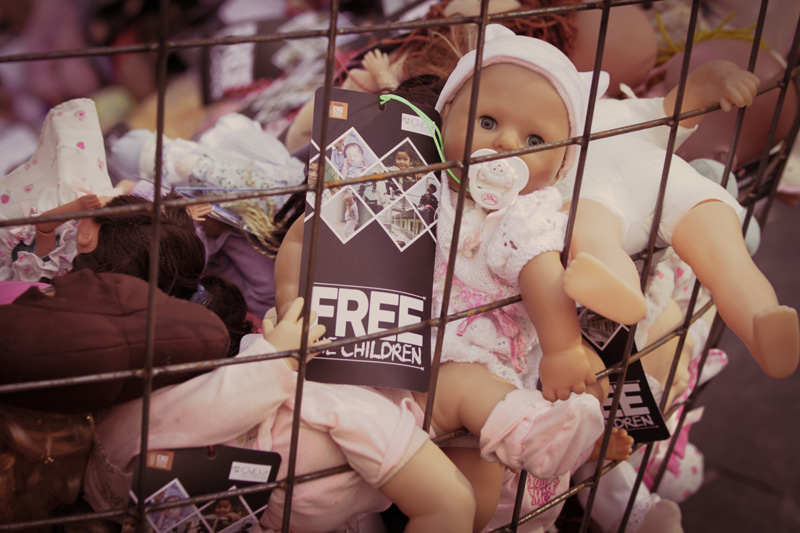

The Australian Coalition to end the immigration detention of children have developed an incredible installation / social action launched in Sydney, and now touring around Australia.
Essentially it's a representation of the hundreds of children locked up by Australia today and we are asking the public to come along and 'free the children'.
People need to enter a 'cage' in order to remove a doll who is wearing an ID tag (kids in detention have to wear one every day, they are each allocated a number).
The tag is removed, the person keeps part as a reminder of their action and tears off half as a card to their MP completed on the spot.
Resources
The real impact will be your version of this action in your community.
Print materials
All the printed materials for the #FreeTheChildren actions are available below.
You can download them by clicking on the link, and then right clicking on the open PDF and highlighting 'save as...'
If you are asked any in depth policy questions, you can direct journalists to:
Sophie Peer
Campaign Coordinator ChiOut
0412 575 012
If you do this, please let Sophie know about your event either by phone or team@chilout.org.
Above is asample invitation letter to be sent to to Local Politicians, Councilors, Celebrities and people of note who are likely to support and encourage the media to cover the issue.
You can download the kit by right clicking on the open PDF and highlighting 'save as...'
The kit includes:
A guide to creating your own cage to hold the dolls
An action checklist
Information flyers and posters to use on the day of the event
FAQ for chatting to the public
Ideas for attracting local media attention
Examples of how it's been done on a teeny budget and on a bigger one!
An Amnesty International group made their own versions of our materials to hand out at their DIY cage installation. Their fantastic DIY kit is available below. For any more information about this guide, contact jeanie.adams@bigpond.com.
If you are unable to get the large installation sculpture to your own #freethchildren action there are many easy ways to make your own simple installation, cheaply.
Check out YCS Perth's version here:

{kind=link}